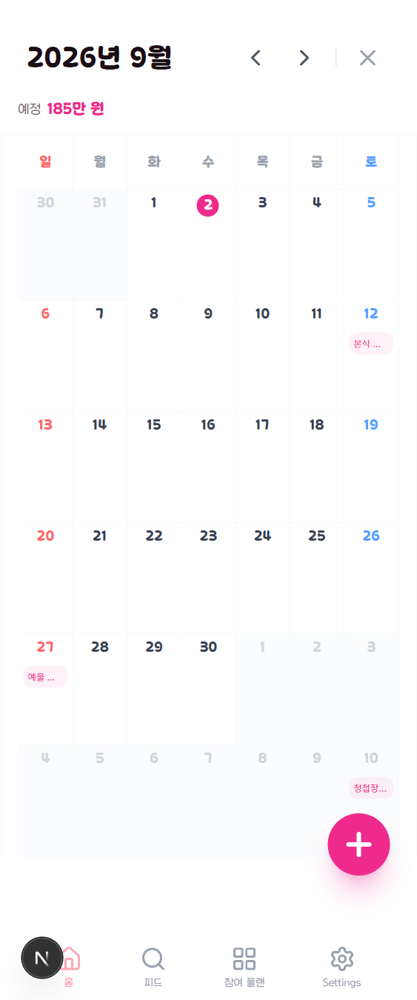

C안 · 02
캘린더
달 이동과 이번 달 지출·예정이 면으로 올라가고, 달력과 그날 목록이 흰 본문을 씁니다. 지금은 달 제목·합계·달력이 모두 같은 흰 바탕에 있어 어디까지가 머리글인지가 선 하나로만 갈립니다.
지금/calendar · 실제 캡처

C안면에 달 + 합계
2026년 9월
이번 달 예정 185만 원
지출 0원 · 일정 2개
일월
화수
목금
토
9월 12일 (토)
합계가 면으로
지금은 달 제목 아래 작은 회색 줄입니다. 면으로 올리면 달을 넘길 때마다 그 달의 규모가 먼저 눈에 들어옵니다 — 달력을 넘기는 이유가 대개 그것입니다.
떠 있는 + 버튼 제거
지금은 오른쪽 아래 분홍 FAB 가 마지막 주를 가립니다. 추가는 선택한 날짜 줄의 추가 로 옮깁니다 — 어느 날에 넣을지가 이미 정해진 상태에서 누르게 됩니다.
달력 / 목록
면 안에 세그먼트를 둡니다. 넓은 화면의 보드 ↔ 캘린더 전환과 같은 자리이고, 폰에서는 보드 대신 목록이 들어갑니다.
지키는 것
셀 안 금액은 ≥768 에서만 보입니다 — 폰에서는 제목이 먼저입니다. 완료 표시는 색 클래스를 겹쳐 쓰지 않고 한쪽만 냅니다 (겹치면 생성된 CSS 순서가 승자를 정해 회색이 흐려집니다).